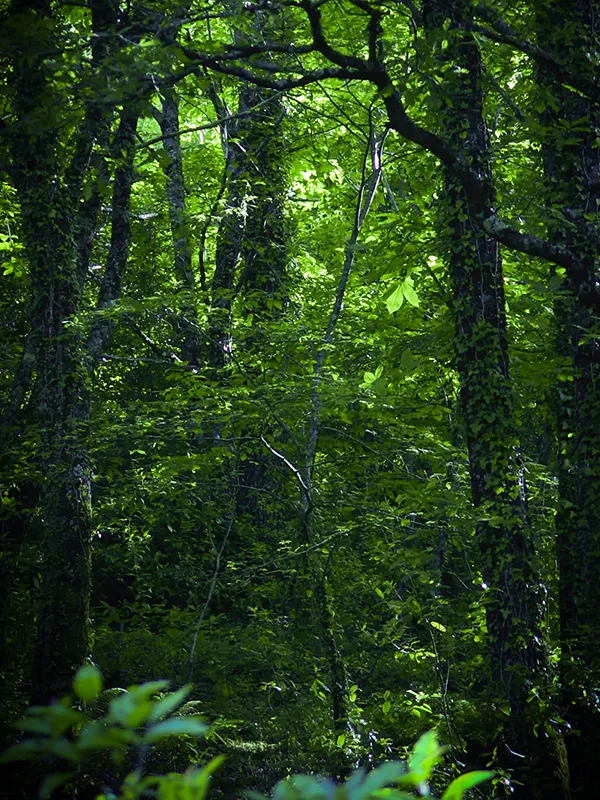
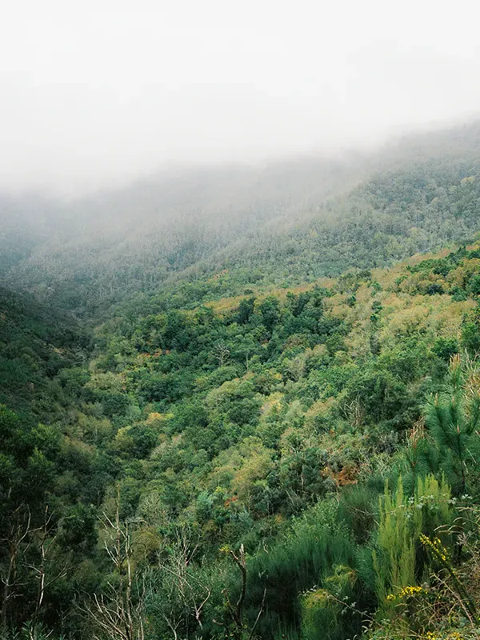
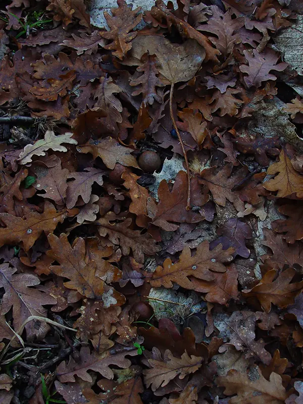
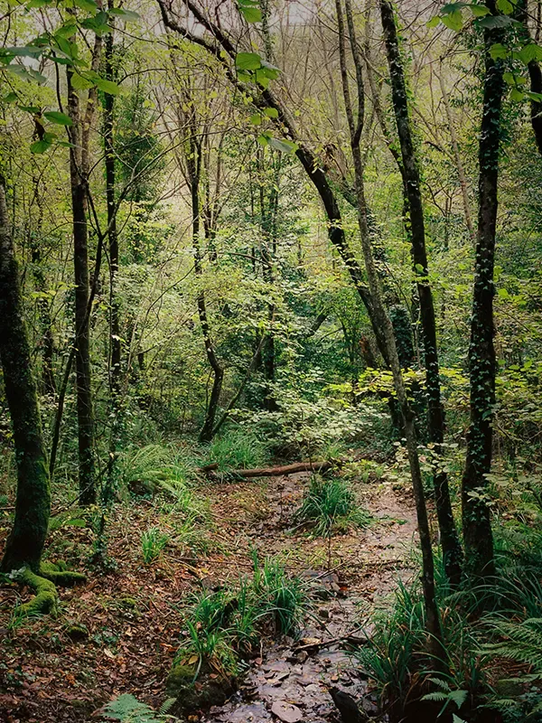
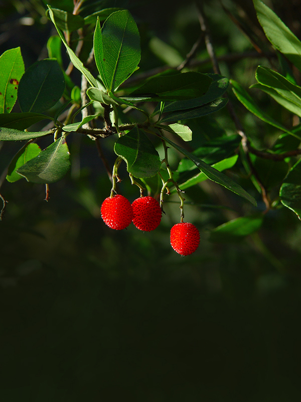

Saber mais

Saber mais

Saber mais

Saber mais
Saber mais
História da floresta
da Serra do Açor
Durante o Período Terciário predominou no nosso território uma vegetação subtropical.
Entre os 5 e 3 milhões de anos, esta vegetação, nas áreas mais interiores de
montanha, era dominada por espécies lauriformes perenifólias (espécies de folha
perene e que fazem lembrar o loureiro). Algumas das espécies dominantes pertenciam a
géneros como Sequoia e Liquidambar e poderíamos encontrar espécies
como Rhododendron ponticum (loendros) e Prunus lusitanica
(azereiro).
Há cerca de 3 milhões de anos deu-se uma progressiva diminuição das precipitações
estivais o que levou à instalação de um clima mediterrânico. Por esta altura
começaram a dominar plantas pertencentes a géneros mais mediterrânicos:
Olea (o género da oliveira), Pistacia, Phillyrea (o
aderno) e os Quercus (carvalhos)… Há 1,8 milhões de anos começaram as
glaciações do período Quaternário. O clima frio e seco favoreceu uma vegetação
semelhante às estepes, dominada por espécies herbáceas e algumas arbustivas (como as
urzes). No entanto, em vales encaixados das áreas montanhosas sobreviveram algumas
relíquias da floresta terciária. O azereiro é uma dessas espécies relíquia. Os
carvalhos também se terão refugiado nestes vales mais abrigados. Só há cerca de 10
mil anos, com o fim das glaciações, as espécies florestais começaram a expandir-se a
partir destas zonas mais abrigadas. A partir desta altura o nosso território passou
a estar coberto por uma floresta dominada pelos carvalhos.
No entanto, esta floresta cedo apresentou sinais das atividades humanas que então
começavam a desenvolver-se: há cerca de 9 mil anos deu-se, com a revolução
neolítica, a “invenção” da agricultura e da pastorícia.
A partir daqui e ao longo de milhares de anos o Homem arrebatou território à
floresta primitiva, normalmente através do fogo, para o converter em áreas agrícolas
ou para pasto de animais domésticos. Mais próximo de nós, entre os séculos XII a
XVII, praticamente acabámos por destruir toda a nossa floresta nativa. À pastorícia
e agricultura somou-se a carvoaria e a construção naval: a construção de uma única
nau exigia o corte de milhares de carvalhos. Assim, a floresta que chegou ao século
XX era pobre e grande parte do país encontrava-se coberto por matos.
As plantações de pinheiro-bravo e de eucalipto em grande escala, que hoje
caracterizam a nossa paisagem, resultam do trabalho de reflorestação que aconteceu
durante a segunda metade do século XX. No entanto, estes povoamentos nada têm a ver
com a floresta que naturalmente se adapta às nossas condições climáticas.
Sabe mais:
Veronica micrantha


Espécies
Ameaçadas
Encontram-se referenciadas para a PPSA 336 espécies da flora, pertencentes a 71 famílias diferentes.
Entre as espécies da flora presentes nesta Área Protegida encontram-se espécies com
estatuto de ameaça de acordo com o Livro Vermelho da Flora Vascular de Portugal
Continental: Epipactis fageticola – Em Perigo; Neotia nidus-avis (L.)
Rich. –
Vulnerável; Lilium martagon – Vulnerável; Veronica micrantha –
Quase ameaçada;
Prunus lusitanica subsp. lusitanica – Quase ameaçada.
O número de espécies da flora que integram os diferentes anexos da Diretiva Habitats
são indicativas da importância da flora da Serra do Açor para a conservação da
natureza a nível internacional. Nesta situação contam-se espécies como
Murbeckiella
sousae Rothm. (Anexo IV), Scrophularia grandiflora DC. (Anexo V),
Veronica micrantha
Hoffmanns. & Link (Anexo II), Festuca summilusitana Franco & Rocha
Afonso (Anexo
II), Ruscus aculeatus L. (Anexo V), Narcissus bulbocodium L.
subsp.
bulbocodium
(Anexo V), Narcissus triandrus L. subsp. pallidulus (Graells)
Rivas
Goday (Anexo
IV).
Sabe mais:
Veronica micrantha


Veronica
Micrantha
Veronica micrantha é uma pequena herbácea de pequenas flores rosadas, endemismo do quadrante noroeste ibérico.
Em Portugal encontra-se dispersa pelas regiões do Norte e Beiras, sendo mais abundante nas áreas montanhosas. É uma espécie característica de orlas húmidas de bosques, nomeadamente em terrenos ribeirinhos e margem de lameiros, surgindo também, em aparente expansão, em caminhos rurais com passagem de água. A tendência nacional desta espécie é incerta, no entanto a ZEC está incluída num dos territórios onde esta espécie se desenvolve favoravelmente, a serra do Açor (Carapeto et al., 2020). Na ZEC só é conhecida na área da PP Serra do Açor. Em 2010 contabilizaram-se 31 núcleos populacionais na Mata da Margaraça propriamente dita, correspondendo a 282 indivíduos, e 1 núcleo nas orlas de antigos terrenos agrícolas próximo de Pardieiros com 268 indivíduos, pelo que a população estimada foi de 550 indivíduos (extraído do Relatório do Plano de Gestão da ZEC Complexo do Açor).
Sabe mais:
Veronica micrantha

Carvalhal –
a Mata da Margaraça
Na Serra do Açor a espécie de carvalho mais frequente é o carvalho-alvarinho, mas podem observar-se outras como o carvalho-negral, o sobreiro e a azinheira.
A floresta que passou a dominar a paisagem após o final da última glaciação (há
cerca de 10 000 anos) era dominada pelos carvalhos. Os carvalhais são florestas
muito ricas em espécies. A Mata da Margaraça é uma pequena parte desse imenso
carvalhal que, em tempos, cobria esta serra. Em enclaves da serra resistem pequenas
e raras relíquias da floresta primitiva desta região:
o carvalhal, dominado pelo carvalho-alvarinho (Quercus robur) e acompanhado
por um
numeroso séquito de espécies vegetais (castanheiros, ulmeiros, azereiros, azevinhos,
aveleiras, folhados, medronheiros…).
A Mata da Margaraça é o exemplo mais bem conservado desta floresta. Dominam o
estrato arbóreo o carvalho-roble ou alvarinho Quercus robur e o castanheiro
Castanea
sativa, existindo alguns exemplares muito antigos destas duas espécies.
Embora menos
abundantes encontram-se outras espécies de folha caduca, tais como aveleiras,
ulmeiros, cerejeiras e nogueiras. Esta mata caracteriza-se pela presença de
elementos de cariz mediterrânico, caso do medronheiro Arbutus unedo, do
folhado
Viburnum tinus e do loureiro Laurus nobilis.
A sua flora é muito interessante, encontrando-se na Mata da Margaraça
a maior população conhecida de azereiro Prunus lusitanica subsp. lusitanica
de toda
a sua área de distribuição. Esta espécie é uma relíquia da floresta laurissilva
subtropical do Terciário. Destaque, ainda, para uma pequena população do raro
endemismo ibérico a Veronica micrantha. Entre as espécies herbáceas que
passam o
inverno na forma de bolbo há espécies interessantes da flora portuguesa, tais como o
martagão Lilium martagon, o selo-de-salomão Polygonatum odoratum,
um narciso
Narcissus triandrus, uma espécie de cardo Eryngium duriaei e
várias espécies de
orquídeas, como Cephalanthera longifolia e Orchis mascula.
Aqui encontram o seu habitat preferencial um grande número de espécies: 249 espécies
de plantas vasculares, 98 espécies de musgos e 53 de hepáticas, 257 espécies de
fungos e, entre a fauna, 279 espécies, das quais 194 borboletas, 5 anfíbios, 8
répteis, 39 aves e 32 mamiferos. Neste tipo de floresta os estratos arbóreo e
arbustivo são densos, o que contribui para a criação de um ambiente sombrio, húmido
e com variações de temperatura mais pequenas do que as do exterior do bosque. Esta é
a principal razão porque o estrato herbáceo é pobre em diversidade e constituído, na
sua maioria, por espécies adaptadas a condições de humidade e baixa luminosidade.
Assim se compreende a presença de 17 espécies diferentes de fetos. As espécies
herbáceas desenvolvem outras adaptações a estas condições, como exemplo pode
referir-se a Primula acaulis, ‘Primula’, porque a primeira
a florir, no final do Inverno, quando as agruras do clima já se amenizaram e chega
muita luz ao solo por as folhas das árvores caducifólias ainda não terem brotado. O
equilíbrio dinâmico de uma floresta caducifólia é complexo e integra um sem número
de processos de interação entre todos os seres vivos que o compõem, quer entre
indivíduos da mesma espécie quer entre espécies diferentes, e destes com os
componentes abióticos do meio (química e física do solo, temperatura, humidade,
luminosidade, clima, etc). Desde a importância da matéria orgânica presente nos
organismos que vão morrendo, aos grandes responsáveis pela sua decomposição (as
bactérias e os fungos), passando por toda a cadeia alimentar que se inicia nas
plantas, capazes de incorporar a energia do sol no sistema florestal através da
fotossíntese, e termina nos predadores como a raposa, a geneta e as aves de rapina,
existem um sem número de exemplos destas interações. Na floresta cada ser vivo, cada
espécie, tem o seu lugar indispensável no equilíbrio do todo. A floresta é também
fundamental para a formação
e manutenção do solo, regulação do clima, para a regulação do ciclo da água, e de
muito nutrientes. Sem a floresta a atmosfera não seria purificada do dióxido de
carbono
e muitas espécies de seres vivos perderiam
a possibilidade de sobrevivência pois estão adaptados a este tipo de habitat.
Sabe mais:
Veronica micrantha







Vegetação
Ribeirinha
Estas comunidades acompanham grande parte das linhas de água da Serra do Açor, formando galerias nas suas margens.
Muitas vezes ocupam o fundo de vales encaixados, onde não sofreram tão drasticamente
os efeitos dos incêndios florestais.
As espécies dominantes nas galerias ribeirinhas da Serra do Açor são os salgueiros
(Salix atrocinera e Salix salviifolia), o azereiro (Prunus
lusitanica subsp. lusitanica), o loureiro (Laurus
nobilis), surgindo também espécies como o sabugueiro (Sambucus
nigra), o sanguinho (Frangula alnus), o amieiro (Alnus
glutinosa), o folhado (Viburnum tinus), o medronheiro (Arbutus
unedo), o azevinho (Ilex aquifolium) e o pilriteiro (Crataegus
monogyna). Junto às linhas
de água é ainda possível observar galerias de vegetação autóctone bem preservada. A
frescura das águas e da vegetação que aqui cresce (espécies adaptadas à proximidade
da água corrente) contribui para que estas áreas sejam mais poupadas pelo
fogo.
No estrato arbustivo e herbáceo surgem espécies como Oenanthe crocata,
Saponaria officinalis, Erica arborea, Myosotis secunda,
Erica lusitanica, Apium nodiflorum, Bryonia dioica,
Hedera helix, Rubus sp., Tamus communis, Asplenium
onopteris, Athyrium filix-femina, Blechnum spicant,
Dryopteris affinis, Osmunda regalis, Polystichum
setiferum, Luzula sylvatica subsp. henriquesii,
Scrophularia scorodonia, Saxifraga spathularis, Euphorbia
dulcis.
A presença de amieiro acompanhado por espécies como o azevinho (Ilex
aquifolium), o loureiro (Laurus nobilis), Luzula
sylvatica subsp. henriquesii, Scrophularia scorodonia,
Saxifraga spathularis e Euphorbia dulcis apontam para a presença
do habitat *91EO da Directiva Habitats (habitat prioritário para a
conservação).
A presença, por vezes abundante, de azereiros, espécie com grande interesse
científico e ornamental e uma área de distribuição restrita e constituída por
pequenas populações relíquia, contribui para o elevado valor conservacionista destas
comunidades. Acresce que o azereiro é um bom indicador de ecossistemas relíquia,
habitats preferenciais para um grande número de espécies, em particular de
briófitos. As galerias ripícolas funcionam também como corredores
ecológicos.
Como foi já referido, estas comunidades acompanham linhas de água, muitas vezes no
fundo de vales encaixados onde os efeitos dos incêndios florestais não se fizeram
sentir com a mesma intensidade das encostas adjacentes. Funcionam, assim, como
refúgios da fauna, facilitando a mobilidade e abrigo a numerosas espécies,
fornecendo também microhabitats sombrios e húmidos, necessários para o
desenvolvimento de muitas espécies da flora. Esta comunidade desempenha ainda um
papel importante na prevenção da erosão, contribuindo para a formação e retenção do
solo. Salienta-se igualmente a importância das galerias ripícolas como barreiras que
dificultam a propagação dos incêndios.
Sabe mais:
Veronica micrantha


Azereiro Prunus lusitanica
L. subsp. lusitanica
O azereiro, Prunus lusitanica subsp. lusitanica, ocupa um lugar de destaque no conjunto de espécies que integram a Mata da Margaraça.
É uma espécie com elevado interesse científico e ornamental, com uma área de
distribuição restrita e indicadora de comunidades e ecossistemas relíquia,
importantes para a conservação da biodiversidade. Segundo alguns autores,
encontram-se na Serra do Açor as maiores populações de azereiro de toda a sua área
de distribuição, sendo a Mata da Margaraça, a maior atualmente existente.
Esta espécie integrava a floresta subtropical que cobriu este território durante
muitos milhões de anos durante o período Terciário, tendo depois sobrevivido às
glaciações do Quaternário em vales mais abrigados.
Há sessenta e cinco milhões de anos, numa altura em que o clima era mais quente
e húmido e muito antes que as glaciações cobrissem de gelo grande parte do que hoje
é o território nacional, existia aqui uma floresta que podemos denominar de
Laurissilva, por ser dominada por espécies laurifólias, ou seja, com folhas
semelhantes às do loureiro, largas e lustrosas.
A sua área de distribuição natural atual vai desde os Pirenéus Ocidentais até às
montanhas de Marrocos, tendo o seu ótimo na Península Ibérica. Em Portugal ocorre no
Gerês e nas zonas montanhosas da cordilheira central, Estrela, Açor e Lousã,
estendendo-se a Sul até ao concelho de Mação. A sua bonita folhagem perene
confere-lhe um grande potencial como espécie ornamental e foi utilizada em jardins
carismáticos como os do Palácio Nacional de Queluz e no Parque das Nações.
Este potencial é confirmado na época da floração pela exuberância de uma miríade de
magníficos e perfumados cachos de flores brancas que fazem as delícias das abelhas
e de muitos outros insetos polinizadores.
Segundo a Lista Vermelha da Flora Vascular de Portugal Continental, o azereiro é uma
espécie com estatuto de Quase Ameaçada.
Os azereirais constituem um Habitat Prioritário para a Conservação da Natureza a
nível europeu (Habitat com o código 5230 da Diretiva Habitats, transposta para a
legislação nacional pelo Decreto–Lei n.º 140/99, de 24 de abril).
Sabe mais:
Veronica micrantha